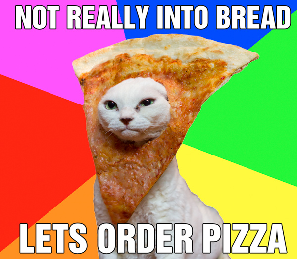

| z, ? | toggle help (this) |
| space, → | next slide |
| shift-space, ← | previous slide |
| d | toggle debug mode |
| ## <ret> | go to slide # |
| c, t | table of contents (vi) |
| f | toggle footer |
| r | reload slides |
| n | toggle notes |
| p | run preshow |
| P | toggle pause |

class Pizza
def initialize
@dough = "wheat"
@cheese = "mozzarella"
end
def bake
puts "putting pizza in oven"
end
end my_pizza = Pizza.new
my_pizza.bake
Pizza is baked
=> nil
my_pizza.class
=> Pizzaclass Pizza
def initialize
@dough = "wheat"
end
...
end
my_pizza = Pizza.new
my_pizza.dough
=> NoMethodError: undefined method `dough' for #<Pizza:0x007fda2a4dcd60>class Pizza
def dough=(kind)
@dough = kind
end
def dough
@dough
end
endmy_pizza = Pizza.new
my_pizza.dough = "wheat"
my_pizza.dough
=> "wheat"class Pizza
attr_reader :dough
attr_writer :dough
endmy_pizza = Pizza.new
my_pizza.dough = "wheat"
my_pizza.dough
=> "wheat"class Pizza
attr_accessor :dough
endclass Pepperoni < Pizza
def spicy?
true
end
endmy_second_pizza = Pepperoni.new
my_second_pizza.bake
Pizza is baked
=> nil
my_second_pizza.spicy?
=> truemy_second_pizza.class
=> Pepperoni
my_second_pizza.class.ancestors
=> [Pepperoni, Pizza, Object ... ]
my_second_pizza.is_a? Pizza
=> true
my_pizza.is_a? Pepperoni
=> false$ irb
1.9.3p392 :001 > puts 2 + 2
4
=> nil
1.9.3p392 :002 >
$ gem install pry
$ pry -r ./pizza.rb
[1] pry(main)> ls Pizza
Object.methods: yaml_tag
Pizza#methods: bake
instance variables: @cheese @dough
[2] pry(main)> edit Pizza
(opens up class in your $EDITOR)